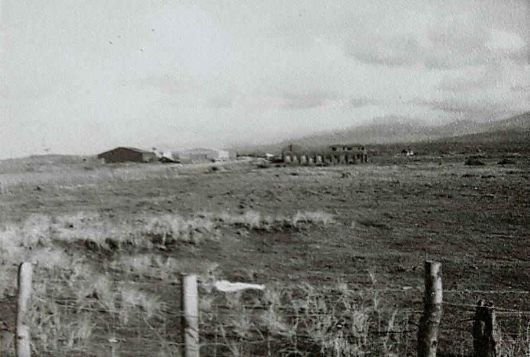
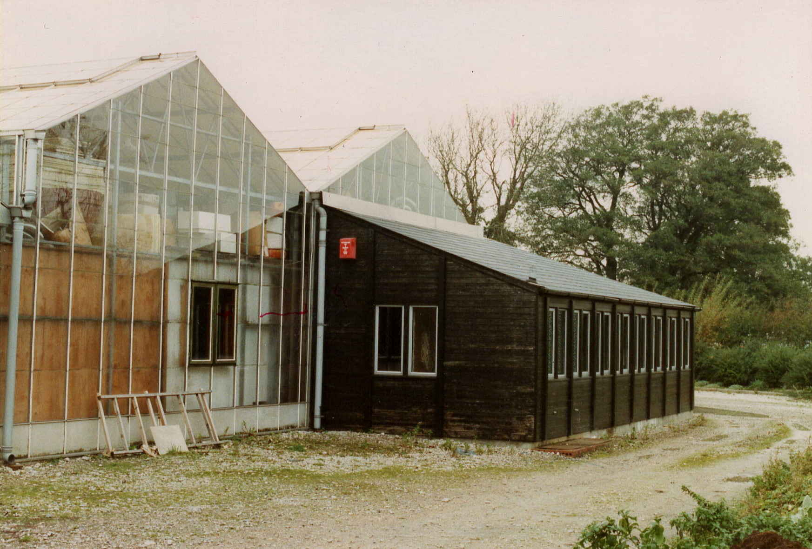
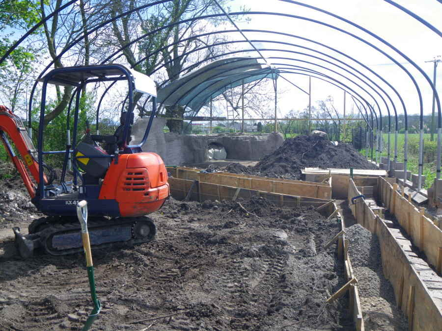
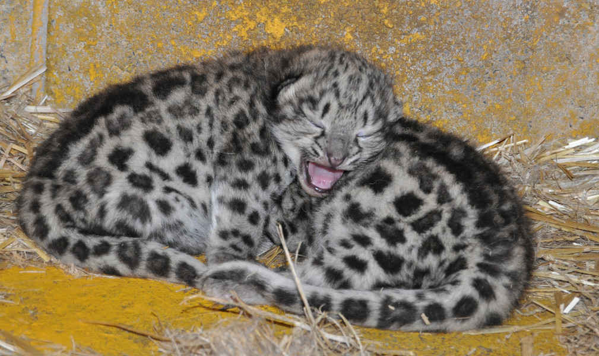

Main Menu
Main Menu14 April 1992...
Opening Day!
tap to continue...
Opening Day!
tap to continue...
Previous
1971
1988
1990
1991
Early
1992
14 April
1992
18 May
1996
2000
2005
2011
2012
2014
2015
2017
...and beyond!
Next
It all started in 1971...
...when Dave Marsden met Jo Whalley.
Dave and Jo both worked at Chester Zoo - Dave in the chimpanzee house, Jo in the giraffe house.
Jo and Dave each knew since childhood that they wanted to spend their life working with animals, and both shared a dream of opening their own zoo one day.
Sparks flew, and in 1977 they were married!

Chimpanzees at Chester Zoo.
Since 1956, Chester Zoo has been home to a troop of Western chimpanzees - a subspecies that the IUCN classed as critically endangered in 2016.
Chester Zoo plays a major role in Western chimpanzee captive breeding programmes and international conservation efforts, including funding the Gashaka Biodiversity Project in Nigeria.
XClose
Rothschild's giraffes at Chester Zoo.
Giraffes are classed as a vulnerable species by the IUCN, with Rothschild's giraffes considered one of the most endangered subspecies.
Although wild populations appear to have recovered to some extent from their historically low point in the 1960s, it is estimated that there are still only about 1,670 Rothschild's giraffes remaining in the wild (as of 2016).
XClose
Several years (and two children) later, with Dave still working at Chester Zoo, the Marsdens started to seriously look for opportunities to go into business for themselves.
Without any external funding or outside investment, money was extremely tight - and suitable places to build a new zoo from scratch were not exactly easy to find!
At the time Jo and Dave's concept was very different to the Lakeland Wildlife Oasis, however. The original plan was to build an 'interactive aquarium', with educational and hands-on exhbits displayed alongside marine life.
In 1988, after spending several weeks driving around the coast of England and Wales looking for a suitable site, they came across their first real opportunity - a good-sized plot of land in Gwynedd, North Wales, near a small beach called Dinas Dinlle.
Tap to see more!
Although situated in an undeniably scenic part of the world, in many ways the site was however somewhat less than perfect!
The location was remote, part of the site of the former Air Force base RAF Llandwrog (more recently redeveloped and restored to use as Caernarfon Airport).
The land itself was overgrown and desolate, containing only a flock of bemused sheep and a cluster of abandoned ex-Air Force buildings... really little more than ruins!
Apart from a few more disused military buildings and other remnants of the former RAF station scattered around the area, there was little else nearby.
Jo contemplating the buildings at Dinas Dinlle, trying (and presumably struggling) to picture their potential to become North Wales' premier visitor attraction.
A view of the site from the main road, with the edge of Snowdonia National Park visible in the distance.
The remnants of the paths outside the buildings visible here give an idea of the general state of disrepair.

Another view of the site from further down the main road.
XClose
Previous
Next
XClose
Unfortunately - or so it seemed at the time - the planning application for the Dinas Dinlle aquarium was turned down.
Jo and Dave appealed the decision, but without success. Reluctantly, they prepared to sell the site and went back to the drawing board.
In retrospect, however, given the 1998 opening of the £12 million Blue Planet aquarium in Ellesmere Port (just over 60 miles away from Dinas Dinlle), as well as the rise of the hugely successful Sea Life Centre brand in the 1990s and 2000s, this was probably a blessing in disguise...!
Luckily, before too long a new opportunity presented itself.
A garden plant wholesale business on the border of Cumbria and Lancashire had recently ceased trading, and was selling their premises.
Excitingly, the site contained a trio of large, well-maintained greenhouses that had acted as nurseries for thousands of house and garden plants destined to be sold on to garden centres and other retailers.
With a bit of work, these greenhouses would be absolutely perfect for a collection of tropical plants and animals.
The aquarium plans were shelved. The Marsdens would build a zoo instead!
The main entrance.
Jo contemplating the buildings that would become the Lakeland Wildlife Oasis, presumably finding it easier to picture their transformation into a zoo than the ruins at Dinas Dinlle!
The south face of what would become the butterfly hall. An extension would shortly be built out from this wall of the greenhouse to house the entrance, gift shop and first room of exhibits.
The view south from the end of the car park, into the area which would later become the 'outside section' of the Oasis.

The east side of the buildings, taken from the driveway round to the car park.
XClose
Previous
Next
Although this new site was a very exciting prospect, there was clearly a huge amount of work to be done before it would be anywhere near ready to open to the public for the first time.
First, there was of course a great deal of 'life admin' to sort out.
Jo and Dave had to uproot the family from their home outside Chester and find somewhere new to live near the seed of their new zoo - in a new area they had barely set foot in and knew very little about.
The idea of living somewhere on the site itself was considered, but quickly rejected. The Wildlife Oasis was going to consume so much of their lives for the forseeable future that they both knew they would soon be thankful of having somewhere else to escape to from time to time!
Eventually though they were ready. Dave left his job at Chester zoo, having worked there for exactly 20 years (to the day!), and the family moved to Milnthorpe, just a few miles further north along the A6, in 1991.
Transforming the trio of greenhouses from a plant nursery into tropical and butterfly halls, on a shoestring budget, took a great deal of work.
Along with any friends and family that they could recruit, Jo and Dave did everything possible themselves. Contractors were called in only where it was unavoidable, such as for building the extension that would house the zoo entrance, first rooms of exhibits and gift shop.
To make things just that little bit more complicated, an agreement was reached with some of the building's previous occupants for them to continue trading and running some parts of their business from the site, with building work carrying on around them, while they prepared to relocate to new premises.
The target date for opening the Wildlife Oasis' doors to visitors was the 1992 Easter school holidays.
One early problem was how to advertise! The Oasis was still in the process of being built, and none of the exhibits would be close to finished in time to be photographed for marketing.
Jo tackled this problem by painting artist's impressions of some of the Oasis' work-in-progress exhibits and soon-to-be inhabitants, as can be seen from the very first leaflet.
Another very important thing that had to be taken care of before opening was of course the animals themselves!
Among the very first inhabitants to arrive at the Wildlife Oasis were a pair of Indian fruit bats, called Bertie and Belinda.
The bats actually arrived several months before the Oasis was to open, and in the absence of a more suitable temporary home took up their roost on the ceiling of the tropical hall while the last few weeks of building and landscaping were still in full swing.
Nobody was sure what they would make of all the frantic activity going on below them, but as it turned out they can't have been overly bothered!
With a few weeks still to go to opening day, a builder glancing up into the rafters spotted a tiny, furry face looking back at him. Wrapped up safely in Belinda's wings, this baby bat was the Oasis' very first birth - quickly named Barney.
Other original inhabitants of the Wildlife Oasis included a couple of black rat snakes from Chester Zoo, a pair of common marmosets, a few fish and various invertebrates.
The outside of the first Wildlife Oasis leaflet, featuring exactly zero photographs.
Inside the first leaflet. The mechanical millipede, made from meccano, was one of the very first exhibits to be completed - built by Dave while still living in Chester. It is pictured here with Jo and Dave's two children, along with a couple of Dave's friends.
Other side
XClose
XClose
Somehow, the Wildlife Oasis was just completed on time for its 'grand' opening.
After frantically stacking the shelves of the newly-built gift shop until the small hours that morning, and with the builders carrying their workbench out the back doors as the first visitors came in the front, the Oasis opened to the public.
At the time the Wildlife Oasis was considerably smaller than it is today, comprising just the first indoor rooms, butterfly hall, aquarium and tropical hall. There was no cafe, and nothing outdoors at all.
As well as the animals and plants, interactive exhibits built by Jo and Dave included a 'design your own mammal' computer programme and a 'whale weighing machine', as well as the mechanical millipede seen in the leaflet.
Four years later, in 1996, the Oasis opened the doors on its first serious expansion. The space to the south of the car park was opened to visitors for the first time, a major milestone in the centre's development.
This new expansion hosted a large walkthrough aviary that was home to bird species such as Waldrapp ibis and Mauritius pink pigeon, as well as the meerkat enclosure (with its viewing dome) and core building of the monkey house that you see today.
Other new residents included Cuban hutias, and the introduction of free ranging species such as golden pheasants and the Oasis' first group of Maras.
Tap to see the full clipping.
XClose
XClose
XClose
XClose
XClose
XClose
The new millenium brought two major new additions to the Wildlife Oasis.
In May, the Creature Comforts Cafe opened for the first time. This new extension to the existing gift shop was opened by Chris Collier, CEO of the Cumbria Tourist Board.
Tap to see the full clipping.
Later in the year, in October, the Oasis became home to its first fossa - a young female called Perdy.
After the arrival of her mate Remus in 2002, Perdy would go on to succesfully raise a litter of 4 cubs in 2004.
A successful captive breeding programme is a hugely important part of the international effort to safeguard the future of this highly vulnerable species.
XClose
XClose
In 2005, the South American walkthrough exhibit was opened by local MP for Westmorland and Lonsdale (and future leader of the Liberal Democrats), Tim Farron.
Originally housing squirrel monkeys and agouti, the walkthrough enclosure later went on to home the Oasis' ring-tailed and brown lemur troops.
XClose
XClose
XClose
XClose
Probably the most spectacular new resident of the Wildlife Oasis (so far!) arrived in 2011.
The snow leopard enclosure with its walkthrough tunnel was completed early that year, and opened to the public on 9th April.
Local councillor Roger Bingham and Assistant Manager of the Wildlife Oasis, Caroline Howard, conducted the Nepal-themed ribbon-cutting ceremony.
Tap to see the snow leopard enclosure take shape!
Tap to enlarge.
Pavan, the Oasis' first snow leopard, was previously homed at the Cat Survival Trust, a conservation and education charity based in Hertfordshire.
The charity's mission includes work to secure long-term protection for the habitat of wild cats throughout the world, with successes to date including the creation of a 10,000 acre protected rain forest reserve in northeast Argentina.
Before moving to the Oasis, Pavan also found movie star fame as one of two leopards filmed for the role of Stelmaria, the dæmon of Lord Asriel (played by Daniel Craig), in the film adaptation of Philip Pullman's book 'The Golden Compass'.
Mal, the Oasis' resident builder and multi-talented handyman, with keeper Adam, get construction underway.
The early stages of building, with the main framework just completed.

Progressing nicely, but a long way still to go!

Foundations for the corridor and viewing tunnel being laid.
The corridor and viewing tunnel start to take shape.
Mal again, hard at work on the viewing tunnel!
Roger Bingham gives his speech on opening day!
XClose
Previous
Next
XClose
2012 brought another milestone for the Wildlife Oasis.
This time it was not a new exhibit, but a decision about the long-term future of the centre that Jo and Dave had built up over the previous 20 years.
The difficult choice was made that rather than continuing as a private business, the Marsdens would establish a charity: the Lakeland Trust for Natural Sciences.
The Wildlife Oasis would be entrusted to the charity, with oversight passed to a board of trustees who would continue to run the centre for the future in line with the charity's conservation and education objectives.
Jo and Dave were not ready just to walk away from the Oasis that they had put so much of themselves into, however!
Dave retired from his role at the Oasis, becoming one of the inaugral trustees - with Jo continuing her role as curator.
As well as some other family members, other trustees initially included ex-employees of the centre, as well as long-term associates of the Oasis who shared Jo and Dave's passion for wildlife, education and conservation.
The Lakeland Trust for Natural Sciences' objectives are:
- Inspire an interest in and appreciation of natural history
- Help people to understand and cherish the natural world
- Contribute to wildlife conservation
8 months after his arrival at the Oasis, in December 2011, Pavan was joined at the Oasis by Tara - a young female snow leopard from Krefeld zoo in Germany.
After a very cautious start, and only once Tara had made sure that Pavan understood in no uncertain terms that SHE was the boss, the two leopards hit it off.
A few years later, on 25 May 2014, the day that everyone at the Oasis had been keeping their fingers crossed for arrived.
Tara gave birth to a beautiful pair of cubs!
Following a public competition, the cubs were named Loki and Luna.
Tap to see more pictures of the cubs!
Wild snow leopard cubs quickly become independent and only stay with their mother for around 18-22 months, so all too soon it was time to say goodbye...
In July 2015 Luna, the female cub, was rehomed at Parco Faunistico Le Cornelle in Lombardy, Italy.
A few months later Loki, the male, moved to Płock Zoo in Poland.
One of the first pictures of the cubs in their den, at about 2 days old.
To everybody's relief, Tara proved an excellent mum and was fiercely protective of her new babies.

The keepers at the Oasis were extremely careful not to disturb Tara throughout the crucial first weeks, before the cubs first ventured out of their den, and intruded on her new family only when absolutely necessary.
One of the cubs in the den, at about 3 and a half weeks old.
Loki at a few months old, exploring the world outside his den.
Growing up, Loki and Luna were inseperable.
Snow leopard litters can range from one to five cubs, but twins are the most common.
Due to their remote mountain habitat and vast range the wild population of snow leopards is hard to count, but best estimates put the total number no higher than 7,000 - and falling.
The whole snow leopard family.
XClose
Previous
Next
Situated in a low lying area on the fringes of the Lake District, England's wettest region, the outside section of the Oasis is unfortunately vulnerable to flooding.
The winter of 2015-2016 however brought by far the worst period of floods that the Oasis had so far experienced.
Weeks of torrential downpours in November brought record levels of rainfall to much of Cumbria and the North West, flooding thousands of homes and businesses in the region - including the Wildlife Oasis.
Before these waters had fully subsided, December brought further misery in the form of Storm Desmond.
At Honister Pass, just 30 miles north of the Oasis, this extratropical cyclone desposited 341mm of water on the day of 5th December alone - a new UK rain record for a 24 hour period.
The protracted period of flooding was a hard and extremely nerve-wracking time for the Oasis, which was forced to remain partially or entirely closed for several months.
On the bright side however the main indoor section of the Oasis remained *just* above the high water level. The situation also triggered a tremendous outpouring of support from volunteers to help with the eventual cleanup, and a fantastic fundraising effort from local businesses, visitors and other friends of the centre for an emergency relief fund.
To everyone who helped and contributed, we can't thank you enough!
Most importantly, the Oasis' inhabitants (although in many cases very unimpressed and grumpy about the situation) all made it through safe and sound.
Fossas are very nimble arboreal creatures, so although a bit taken aback by events Perdy coped with the floods better than some of the Oasis' other inhabitants.
As well as the canoe, the Oasis' keepers made good use of several pairs of kindly donated fishing waders.
The entrance to the Oasis and underwater car park. The main buildings thankfully stayed dry, just by a matter of a couple of centimetres!

The main access path down towards the meerkat enclosure, completely submerged.
The floods reached the indoor section of the marmoset enclosure as well as the outdoor parts, but fortunately their elevated, heated dens stayed powered and dry.
The view south across the neighbouring fields - the whole surrounding area was affected, not just the Oasis!
The ring-tailed lemur troop were quite put out by all the water and were careful to keep their toes dry.
XClose
Previous
Next
2017 marked the Oasis' 25th birthday which, for now, brings this story up to date.
This has of course only been a short tour through the story of the Wildlife Oasis, without even a mention of many of the popular inhabitants over the years!
For example, previous visitors may remember the early successes of the kowari breeding programme, or the lovable rheas whose paddock eventually made way for the snow leopards.
And what about the ever-popular lungfish, or pacu? Or the leafcutter ants? Or axolotls? Or the huge variety of plant species that bring the tropical halls to life? There are a lot to choose from!
...but what's next for the Wildlife Oasis?
Well, there's no shortage of ideas!
The keepers at the Wildlife Oasis and the trustees of the Lakeland Trust for Natural Sciences are committed to helping the centre develop further, expanding on its conservation work and bringing more fascinating wildlife and educational interactive exhibits to the area.
The biggest obstacle to these goals is of course the constant financial challenge involved in running the centre.
The cost of feeding, heating and properly caring for the Wildlife Oasis' inhabitants is very high - particularly through the winter months, during which visitor numbers are of course much lower.
The rate at which enclosures and exhibits deteriorate is also quite shocking! To keep the enclosures safe and looking anywhere close to their best, the maintenance, repair and rebuilding work never stops - which is of course a constant drain on the accounts.
If you support our work, we hope you'll join us on the next stage of our journey.
How can you do this?
Well, the best way is to come back and visit us again! Annual passes are available, and the cost of your visit today will be refunded should you want to upgrade your entry ticket.
Word of mouth support is incredibly valuable, so if you enjoyed your visit please tell your friends!
If you want to contribute even further, why not sponsor your favourite animal? The Oasis also offers a 'keeper for the day' experience, and is a great destination for school trips, birthday parties or other group visits. Just ask at reception to find out more about any of these.
Most of all, thank you for visiting today - we hope to see you again soon!

The kowari is a small, carnivorous marsupial classed as Vulnerable by the IUCN.
Although several kowari litters were bred successfully at the Oasis, the captive breeding scheme was discontinued in Europe and moved to Australia in the mid-1990s.
XClose
Rheas are large, flightless birds from South America.
They belong to the ratite group, whose other living members include ostriches, emus, cassowaries and kiwis.
XClose